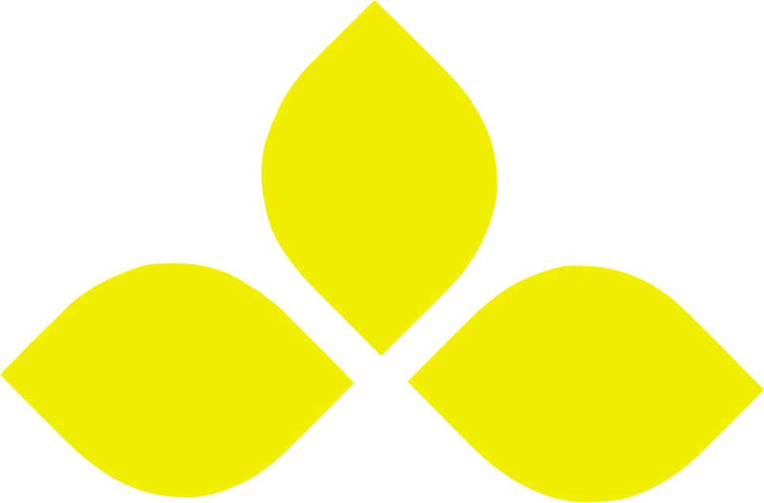
เกี่ยวกับเรา
From Concept
to Product.
เราช่วยเปลี่ยนไอเดียให้กลายเป็นผลิตภัณฑ์จริง
Saffron Laboratories ให้บริการ OEM เครื่องสำอางแบบครบวงจร พร้อมทำงานร่วมกับแบรนด์ในทุกขั้นตอน ตั้งแต่การวางแนวคิด พัฒนาสูตร คัดเลือกวัตถุดิบ ผลิตและบรรจุ ไปจนถึงการควบคุมคุณภาพและเตรียมผลิตภัณฑ์สู่ตลาด เราให้ความสำคัญกับการทำงานร่วมกับลูกค้าอย่างใกล้ชิด เพื่อทำความเข้าใจความต้องการและพัฒนาแนวคิดให้เป็นผลิตภัณฑ์ที่เหมาะสมกับแบรนด์ โดยมีกระบวนการทำงานที่เป็นระบบ ควบคู่กับการควบคุมคุณภาพในทุกขั้นตอน ตั้งแต่แนวคิดแรก จนถึงผลิตภัณฑ์พร้อมออกสู่ตลาด เราพร้อมเติบโตไปพร้อมกับแบรนด์ของคุณ
COMPANY PROFILE
มาตรฐานและการรับรอง
บริษัท แซฟฟรอน แลบบอราทอรี่ส์ จำกัด เป็นผู้นำด้านการรับผลิตเครื่องสำอาง โดยมุ่งมั่นในการให้บริการและผลิตภัณฑ์ที่มีคุณภาพสูงสุดแก่ลูกค้า
คุณภาพคือสิ่งสำคัญอันดับหนึ่ง เราภูมิใจที่ได้รับการรับรองมาตรฐานการผลิตที่ดี (GMP) จากองค์การอาหารและยา กระทรวงสาธารณสุข การรับรองนี้เป็นข้อพิสูจน์ถึงกระบวนการควบคุมคุณภาพที่เข้มงวดและความมุ่งมั่นของเราในการผลิตเครื่องสำอางที่ปลอดภัยและมีประสิทธิภาพ
และรับรางวัลมาตรฐานอุตสาหกรรมสีเขียว (Green Industry) ระดับ 2 ซึ่งสะท้อนถึงความพยายามของเราในการลดผลกระทบต่อสิ่งแวดล้อมและส่งเสริมนโยบายที่เป็นมิตรต่อสิ่งแวดล้อมในทุกขั้นตอนการดำเนินงาน
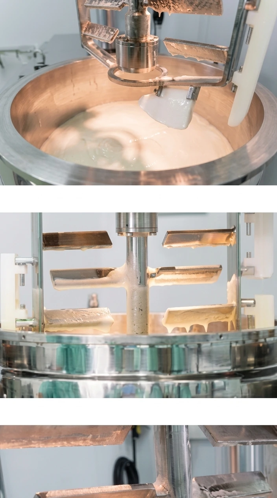
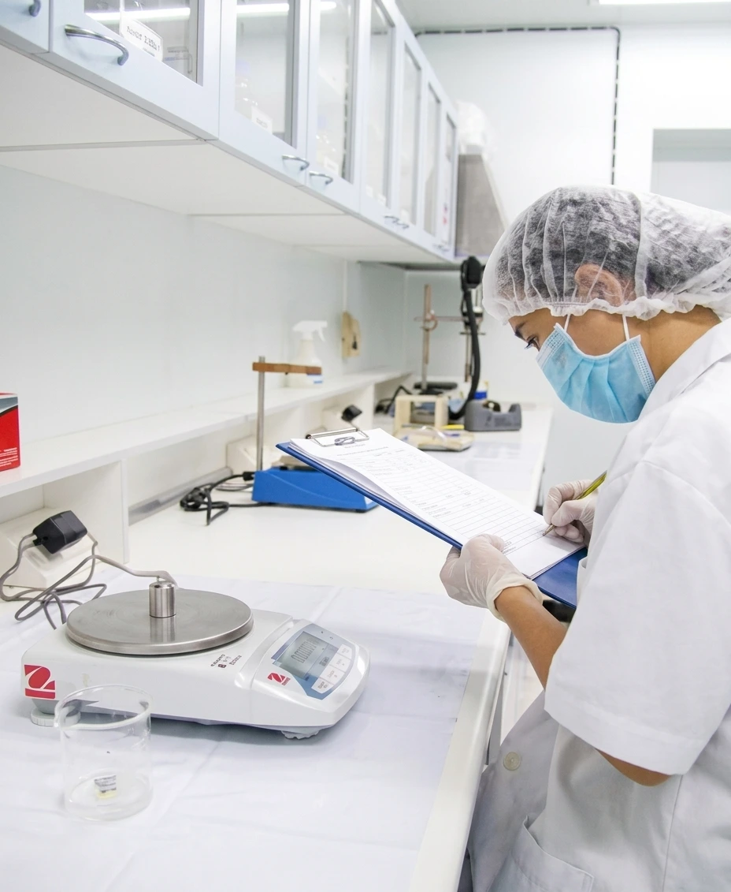
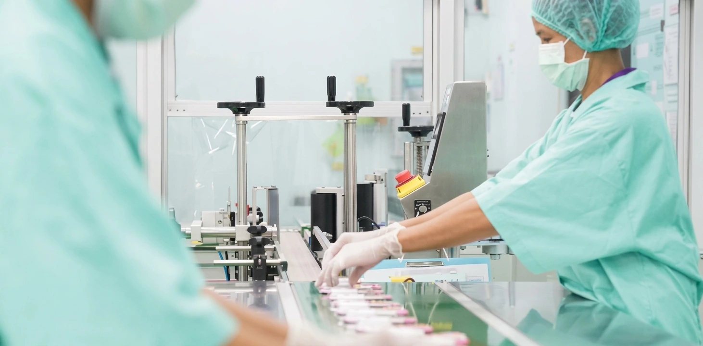
มาตรฐานของบริษัท


OUR PARTNERS
พันธมิตร
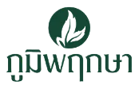
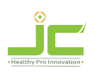
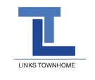
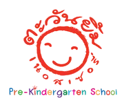
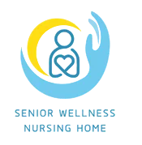
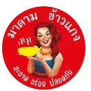
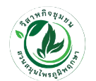